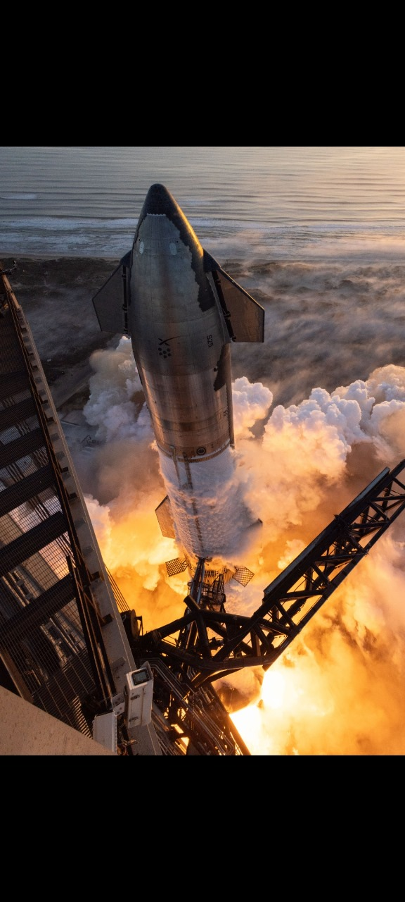

A rockets a vehicle that uses jet propulsion to accelerate without using the surrounding air. A rocket engine produces thrust by reaction to exhaust expelled at high speed Rocket engines work entirely from propellant carried within the vehicle; therefore a rocket can fly in the vacuum of space. Rockets work more efficiently in a vacuum and incur a loss of thrust due to the opposing pressure of the atmosphere.
Today, rockets routinely loft spacecraft off Earth, sending satellites to low-Earth orbit or cargo to the International Space Station. And with the commercial space industry booming, astronauts now regularly travel to and from the orbiting lab, carrying scientific experiments with them.
On July 16, 1969, the 363-foot tall Saturn V rocket launched the Apollo 11 mission from NASA’s Kennedy Space Center.
Three days later, astronauts Neil Armstrong, Michael Collins and Edwin "Buzz" Aldrin landed the lunar module in the Sea of Tranquility on the moon.
Putting his foot down on the Moon for the first time, Neil Armstrong famously declared, "That's one small step for man, one giant leap for mankind."
When Space Shuttle Columbia took to the skies on its maiden voyage on April 12, 1981, a new era of spaceflight began.
The historic flight paired Apollo and Gemini veteran astronaut Commander John W. Young with Pilot Robert L. Crippen, who was heading to orbit for the first time.
The Space Shuttle Program went on to fly more than 100 missions over 30 years before ending in 2011.
"Dawn of a New Era"
On November 20, 1998, assembly began on the largest, most complex construction project in space.
At the Baikonur Cosmodrome in Kazakhstan, the Russian Space Agency launched the first piece of the International Space Station atop a Proton rocket.
The Zarya Module, which translates to "sunrise" in English, served as a temporary control module for the ISS during its early stages of assembly.
Meanwhile, the Space Shuttle Endeavour would launch on Dec. 4, 1998 with the space station Unity Node. The Russian and American crews would meet in space on Dec. 6, 1998 to turn the lights on to the International Space Station together.
"Back in Business"
On May 30, 2020, SpaceX launched its Falcon 9 rocket from NASA’s Kennedy Space Center with two NASA astronauts inside the Crew Dragon spacecraft.
This marked the first launch of astronauts from U.S. soil since the conclusion of the Space Shuttle Program in 2011, as well as the first time ever that humans traveled into orbit in a commercially developed craft.
"To Infinity and Beyond"
On February 6, 2018, the Falcon Heavy lifted off from NASA’s Kennedy Space Center to become the most powerful operational rocket in the world by a factor of two.
The success of this partially-reusable system is paving the way for the development of SpaceX’s fully-reusable (and cost-saving) rocket, the Starship launch system.
The Falcon Heavy put a Tesla Roadster and its passenger, Starman, into orbit around the sun—but SpaceX’s goal is to one day carry humans to the Moon, Mars, and beyond.
A satellite or artificial satellite[a] is an object intentionally placed into orbit around a celestial body. Satellites have a variety of uses, including communication relay, weather forecasting, navigation (GPS), broadcasting, scientific research, and Earth observation. Additional military uses are reconnaissance, early warning, signals intelligence and, potentially, weapon delivery. Other satellites include the final rocket stages that place satellites in orbit and formerly useful satellites that later become defunct.
Sputnik, more officially known as Sputnik 1, was the first artificial satellite to safely make it into Earth orbit.
The Soviet Union launched it in secret on Oct. 4, 1957, from the Baikonur Cosmodrome in Kazakhstan, the same location where Russia launches crews to the International Space Station nowadays.
While in space, Sputnik gathered data on the density of the upper layers of Earth's atmosphere and measured how well radio signals transmit in the ionosphere, a layer in the upper atmosphere that is full of charged particles. Space observers commonly say that the surprise of Sputnik spurred the United States to engage in a space race to send satellites — and eventually, astronauts — into orbit to show the merits of democracy over communism.
The United States made two attempts to send a satellite into space after the Soviet Union's Sputnik. The first effort failed, but Explorer 1 successfully flew into space on Jan. 31, 1958.
Explorer 1 is best remembered for confirming zones of charged particles trapping radiation in the magnetosphere of Earth, called the Van Allen belts. The belts have remained continued objects of investigation across space missions ever since, to better understand how they fluctuate with space weather — the interaction of the sun's activity with the Earth's sphere of influence.
The main mission of NASA's Explorer 6 satellite, which launched on Aug. 7, 1959, was to study radiation trapped in Earth's upper atmosphere, and to determine how often micrometeorites penetrate our atmosphere and the area near our planet.
But a valuable side mission saw the satellite take the first image of Earth from space on Aug. 14, 1959, over Mexico. The image, although low-resolution by today's standards, demonstrated the potential of using space machines to take pictures of our planet. Today we commonly use Earth observation satellites to image the surface and atmosphere in many wavelengths of light to track phenomena such as climate change, agricultural yield or natural disasters.
Echo 1 was the first experiment to try passive communications from orbit. The spacecraft was a balloon made of Mylar polyester film that could reflect microwave signals. The satellite was tested for transcontinental and intercontinental telephone, radio and television signals.
While Echo 1 and its successor Echo 2 worked well, NASA elected to focus on active communications technology. Still, the "sateloons" spurred research into inflatable structures that led to applications like the Bigelow Aerospace module now attached to the International Space Station.
NASA's TIROS 1 (Television and Infrared Observation Satellite) launched on April 1, 1960 on a test mission to see how well satellites could send TV pictures from space to Earth to observe the weather.
The satellite had two cameras, a wide angle one and a narrow angle one, to take pictures of cloud cover over Earth. Today, most of our weather forecasts come from satellites that constantly gaze at the Earth from geosynchronous orbit, although more small satellites in low Earth orbit are supplementing those observations. TIROS also ushered in satellites devoted to TV broadcasting, starting with Telstar in 1962.